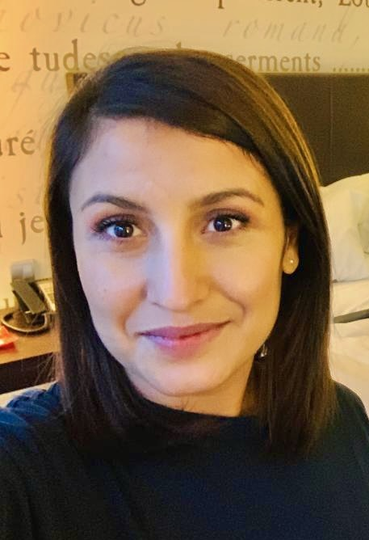

Roma Art
Alina Kostenko
Google Camp Alley Number Twenty-Eight Now Five
She was the last angel before I was born. This could be a poem for her— instead, I mastered concealing— Gods circled around her slowly, gently separating her from the crowd; granted her with cherub-like cheeks, olive eyes, a splendid mind, and almost no height. Imagination, that made her childhood — my childhood. I hardly got to meet her. She became engulfed by Voices. Wings of darkness, I called them. They pecked at her reality. Her memory— still intact. One night, as she lay on the grass, staring at the sky, at the abyss of her loss, as if on the mountain, as if the bush were on fire, as if an angel
began
its
descent.
As a first sign, a window cracked. Then another— a frog leaped from the doorknob.
My mother's inferno thus began.
I am now her age when we lost our first home—
occasionally, I type our old address into Google Maps and walk the streets. The air is still dusty, thick, heavy, sweaty— it's funny how technology and memory can become one. I see the newly asphalted road, with trimmed hedges but when I was growing up, there was only mud, even the harshest of suns wouldn't dry. We built a house at the very edge of the town, on one side of the junction of two national roads. On the other side, there was this famed camp, where only thistles grew and where travelling gypsies would set up camp, caravans stopping to rest their horses, dogs tied to the back of the wagons, pots and pans rattling on the sides. They came from up the mountain, colorful, noisy and wealthy, selling lumber. With time and with the change of regime, they stopped coming, and the field, stretched out into the distance, remained empty. In summer we'd roam it freely, barefoot, hungry kids, to find this particular type of grass called susay, a delicacy for dad, leaping all the way up past the former sugar factory, past the now dried little river, and into our gipsy village, where my grandparents lived.
I zoom slightly out of the map—
to the town sign, where we would poke the bee's nests. I climb atop it, and stare out into the horizon, all the way until the train tracks, until my eyes hurt from this much blue. I can still hear the four AM commuter train's horn. I land into the disparaged meat processing plant, across the other side, towards the city, which has a large orchard where we can slip through a hole in the fence and steal unripen plums, cherries or quinces— it's sad how I still quiver at their bitterness. I turn a little bit back to where we spread our blankets and read our future in coffee grinds and rub our faces with cucumber peels, to whiten our skin, to where mom planted tomatoes. I see dad tinkering on the roof, the neighbor with the cow who stops by for coffee, the one that cooks all day, and comes by to share, the other one who brings us big, juicy grapes from the farm. My dollhouse. At the junction, someone built a tire repair shop, then a car wash, a hotel and a restaurant. I grew up alongside them, in that wilderness. It took a long while until we got electricity and running water. When we lost the first house, the hotel owner knocked it down to make space for a parking lot and we built another house just up the road. A provisory one: number five. That's when the signs started appearing.
Today, I ran out of the library—
a poet made me cry, a woman hugged me, another woman stared deeply into my soul. A man replied, one answered the phone, another wrote hi. A train came on time, I got in, no delays, no mistakes. A bird landed on my balcony and stayed, and kept me company, a big task crossed off my list. I joined in the dance happening around me. I have never been nostalgic about home, and I nearly never remembered it fondly. For years, all I could conjure up when the word home came about was - mud, darkness, hunger, fear and hate. My doctors said to paint— a blue butterfly, a minotaur, a white feather, a healing hand, a warrior sword. A miner's hat. A canary. A cave of wonders. To write letter to my home: my fault in my exile was established. My voice is starting to take shape. My voice is the voice of a magpie. I met my friend for a coffee, called my oldest friend, called my sister. I'm happy, and I have nobody to share it with. I am lucky to align my stars, but nobody to thank.
Google, find my home—
so I can sit under again our acacia tree, to tell mom about this Irish poet lady, how I heard her read poem about her mom and how it absolutely broke me and I ran out of the library then a woman hugged me and another pierced my soul. About the man who, finally, replied. I tell her that my life is like a summer's day reading of our fortunes in the acacia shade— is slowly coming true. I tell her that, occasionally, I too feel separated from the crowd, with signs creeping up on me, too. Maybe, just maybe, it will work itself out, as long as I keep moving forward. As long as I remember Camp Alley, I suppose, too. Ma trasha, mamo, I hear the leaves whispering, just like my mom told me, before I was born
—before my house grew wings, I mean—
Finding Home
Season one
Himself whistling sweet Molly Malone. I remember bawling my eyes out at the Irish Embassy in Bucharest, unable to explain to the lamppost skinny boy watching me, why. Unable to utter any words but The Frames. The Frames. the frames. All I did, that year. Don't feel too sorry for yourself. Make paper your home. Then I sent him a postcard, then a picture of me, bare-legged, smiling on a yacht. Then nothing. My green-eyed mother came to me in my dream, she said— come daughter, you belong here. He does not. Then I forgot.
Season two
Nothing compares to me. This is mine. Drip, drip, drip — this is my land. It was never about my skin colour, or my stand. It was about my following the sounds the water made, when splashed against the rocks, against my face. A pluviophile—I too am inundated daily, inhabited by seagulls, forests and Hunger. I'm Ireland's daughter, ha! ha! ha! If you wanted to find me, I'm camped by the water!
Season three
I'm home, mother. The home of the memories from my dreams, where rooftops scream and children scream, and freshly cut grass, blooming spring, and sea and sumptuous redbrick houses are symmetrically aligned against the perfect April sky. It's my birthday again, mother, the day I am alive. Two trees — one white, one green, like me and my gypsy twin. Two robins, like two hand holding teens.
Season four, obviously
I hate having so much beauty, I hate having so much beauty. So much beauty, everywhere. I'm reminded so, so harshly that I'm dreaming. That I'm no one. That I'll never have what's fair. I hate burnt orange dancing leaves in autumn wind. Without a care, clothed in ivy, divine light that's falling gently on the gravestones, peeking shyly. Unbothered by Irish weather, chatty people buying houses, nearly happy, everywhere.
Last season
This winter, I'll not go hungry. The blue-eyed poet lady, she saw me, with her deep, watery gaze she pierced right through layers and layers of dirty skin, and layers and layers of failures and sins, right through to where my poetry spews, daily. With her fabulous antlers, this mother deer, used to guiding her fawns to the water, she came and said— hi, let's meet for a coffee, soon, and I kneeled, and I said— I'd be delighted, while I fact. I'm elated. To be seen. To be adopted.
Alive, alive O'! Alive, alive O'!
(First Published in Unapologetic Magazine, Issue 4, Dublin 2025)
CONTENTS

ABOUT THE ARTIST
Alina Kostenko is a Dublin-based Roma poet and cultural facilitator whose work explores memory, family and the fine line between mythmaking and storytelling. She is a recipient of the Dun Laoghaire Rathdown Mentorship Grant and showcased her poetry during the One Island Many Voices program, supported by Dublin UNESCO City of Literature and Linen Hall. Her poetry has been published in Unapologetic Magazine and the Dubeloving Anthology. She is a graduate of The Stinging Fly 2025 Summer School for Creative Non-Fiction and is actively working on her first poetry collection.